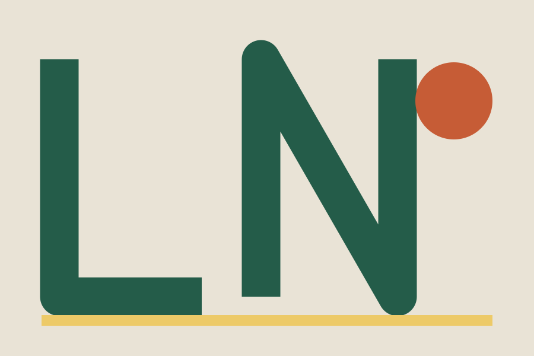
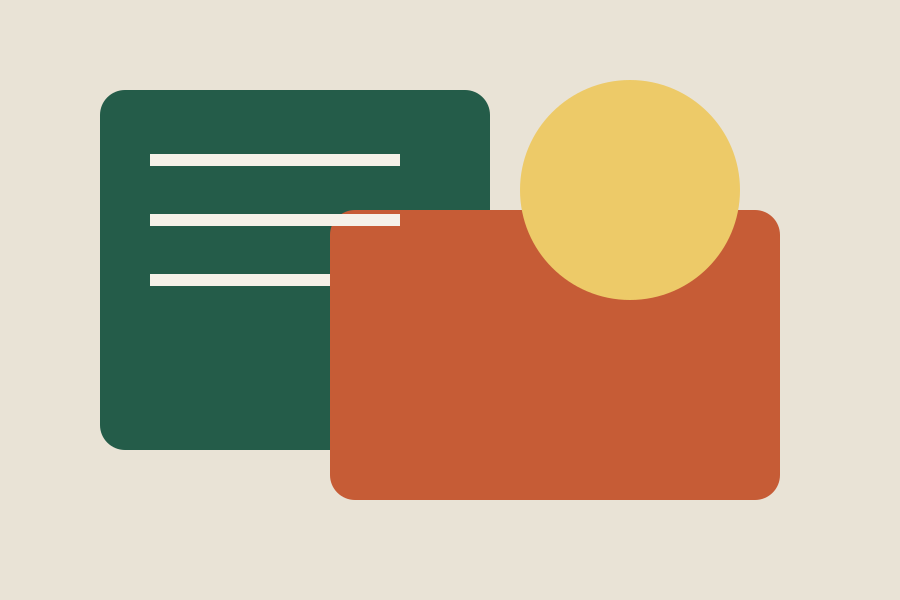
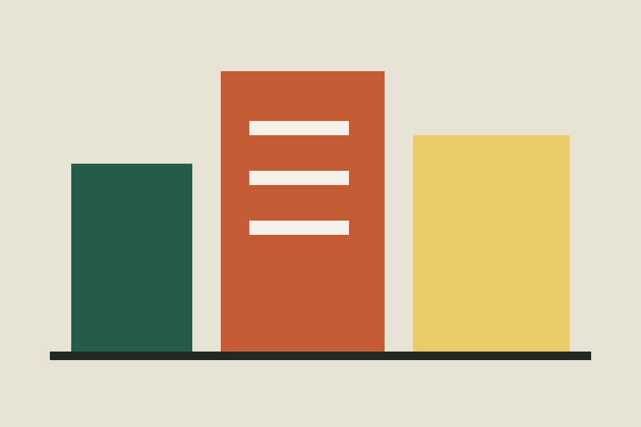
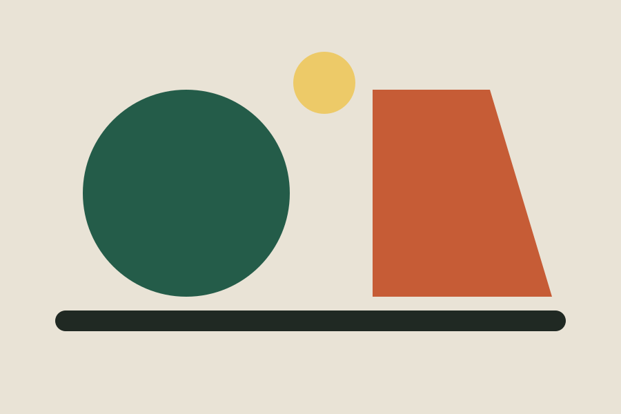
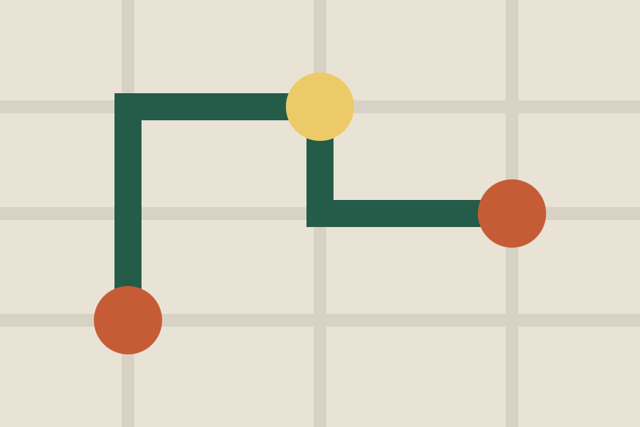
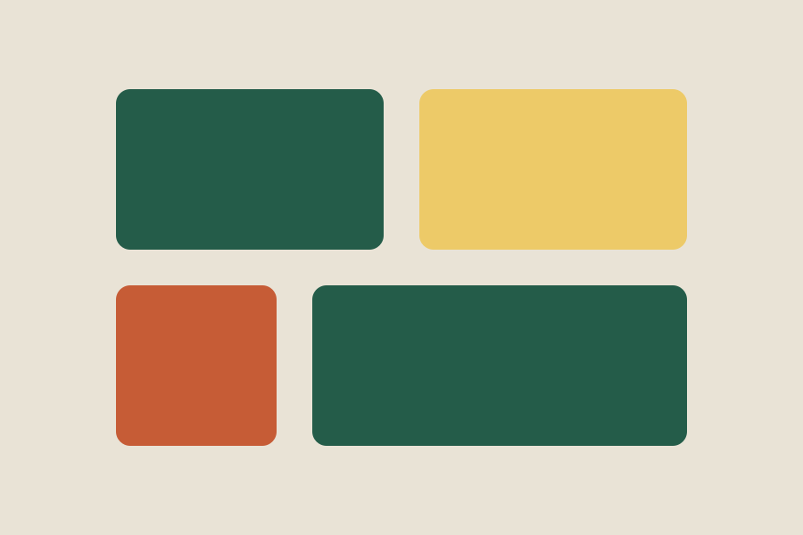

Lettere in movimento
Come cambia un messaggio quando cambiano le lettere? Un incontro su tipografia, ritmo e comunicazione visiva.
Sede: Officina Nord
12–13 giugno · Torino · Festival immaginario
Incontri, laboratori e mostre: scegli da dove cominciare.
Il venerdì esploriamo lettere, materiali e immagini. Il sabato incontriamo oggetti, mappe e progetti condivisi. Scopri gli appuntamenti e i luoghi del festival.

Come cambia un messaggio quando cambiano le lettere? Un incontro su tipografia, ritmo e comunicazione visiva.
Sede: Officina Nord

Un laboratorio per osservare materiali di recupero e immaginare nuovi utilizzi attraverso piccoli esperimenti.
Sede: Spazio Forma

Una raccolta di manifesti immaginari racconta quartieri, incontri e abitudini della città attraverso forme e colori.
Sede: Cortile Comune

Designer e artigiani discutono come nascono gli oggetti quotidiani, tra funzione, cura dei dettagli e possibilità di riparazione.
Sede: Officina Nord

Disegniamo una mappa fatta di percorsi, punti di incontro e luoghi da riscoprire, partendo dall'esperienza di chi li attraversa.
Sede: Spazio Forma

Esposizione finale dei lavori realizzati durante i laboratori del festival e momenti di confronto tra i partecipanti.
Sede: Cortile Comune